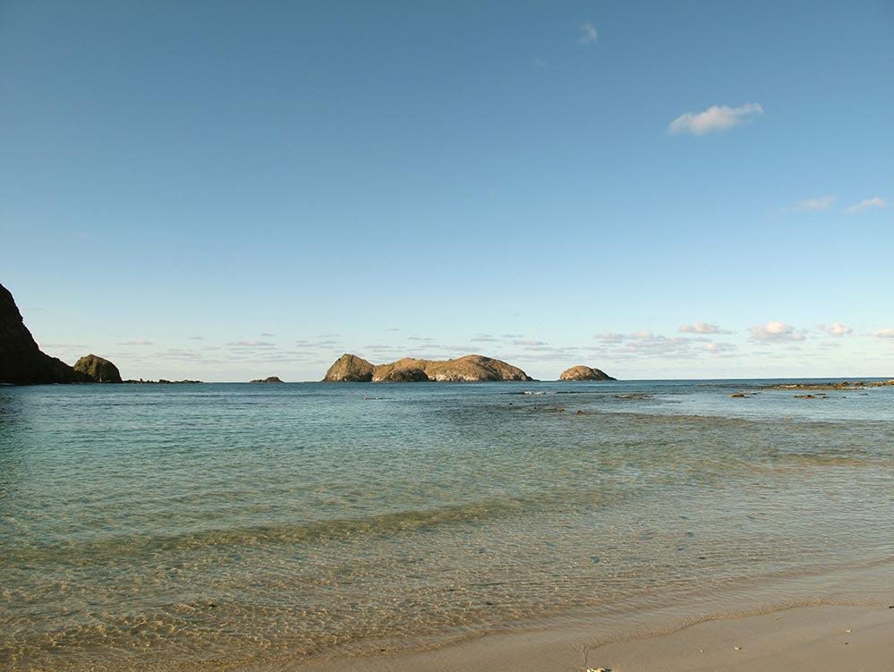

Places
Erscott’s Hole

Home to 500 fish species and 90 species of coral,
Lord Howe’s snorkelling is second to none.
A luxuriant garden of Staghorn coral dominates the iconic
snorkelling destination that is Erscott’s Hole,
a natural wonder within a protected intertidal groyne.
Admiralty Islands
Just 15 minutes by boat from Lord Howe rests an intriguing group of
volcanic formations, dubbed the Admiralty Islands.
Large pinnacles, coral reefs, larger schools of fish and
diving depths of 15-40 metres characterise the islands.
Eager divers flock to this area.
Blinky’s Beach

Keen surfers and body boarders head to Blinky Beach to experience
what the locals have dubbed ‘Champagne Surf’.
Located on the island’s east side, the beach is the most
popular place to catch a ride on some of Australia’s least crowded waves.